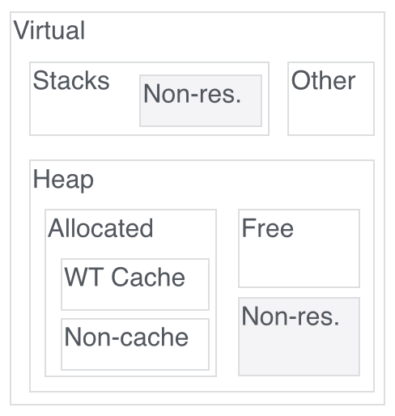

The Basic view collects together the most important metrics for
assessing the overall health of a node or cluster. It can serve as
a useful starting point for constructing a custom view to diagnose
an issue.

The Memory view shows metrics useful for diagnosing memory
consumption issues. The figure shows how memory is
organized. Indicators of problems include:
-
Large resident memory relative to avaiable physical memory;
generally this will be a result of one of the following
issues.
-
A server crash (diagnosed by uptime returning to 0 and no
indication of graceful shutdown in the mongod log) in
conjunction with an increase of resident memory is often the
result mongod being terminated by the OOM (out-of-memory)
killer on Linux.
-
A large amount of allocated memory outside of the WT cache
("allocated minus wt cache"). Generally mongod aims to bound
memory allocated outside the cache; if this is not the case
further investigation to determine the cause is needed.
-
If the heap size ("heap_size") is larger than expected and
this is accounted for by a large amount of free memory in the
heap ("total free") but the allocated memory
("current_allocated_bytes") has never been large enough to
account for the heap size, there may be a memory fragmentation
issue.
-
WT cache size should remain bounded by the configured maximum.
The following are not necessarily an indicator of a problem per se:
-
Large virtual memory: a substantial portion of virtual memory
may be non-resident and therefore not consuming available
physical memory.
-
A large amount of virtual memory not used by the heap
("virtual minus heap"). Typically this is virtual memory
reserved for stacks, and can be large if there are a large
number of connections; however generally only a small portion
of this is resident.
Bottlenecks are places in the system where parallel operations may
queue waiting for some resource. Contended resources include CPU,
disk, and access to data structures. The magnitude of a bottleneck
is indicated by queue length or count of active operations, so it
is a dimensionless number. This is reported in one of the
following ways:
-
Directly as a queue length, for example active
readers/writers, processes (threads) running/blocked, disk
queue length, WT transactions out.
-
As a utilization percentage, which is essentially queue length
truncated at 1; that is, a utilization of 100% corresponds to
a queue length ≥1.
-
As an accumulation of time spent waiting for a resource, such
as a lock. This is typically recorded as cumulative
microseconds spent waiting across all threads; by calculating
a rate from this and scaling by one million, we can infer the
average number of threads waiting on that resource at any
given time, so this metric is presented with units of
"threads".
To diagnose the cause of a bottleneck, consider the order in which
any given operation encounters the potential bottlenecks. If a
bottleneck is evident at one point in this sequence but not at the
next, then the problem must be between the upstream and downstream
points